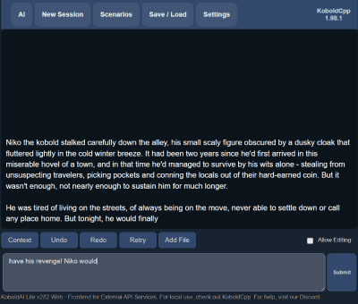
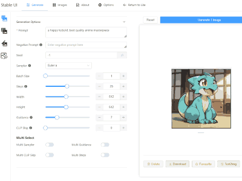

Get KoboldCpp
Choose the release for your computer. Ready-to-run builds keep setup simple.
Find your downloadOne app. Big possibilities.
Meet KoboldCpp: a free, open-source app for running AI models on your own hardware. Chat, write, create, and explore. All in one place.
Hello, local AI
Choose the release for your computer. Ready-to-run builds keep setup simple.
Find your downloadLoad a GGUF model, or let a quick launch template fetch the files for you.
Explore starter templatesLaunch the app, open the built-in browser interface, and say your first hello.
Start your first chat

More than a model runner
KoboldCpp builds on llama.cpp and brings KoboldAI Lite along for the ride: a browser interface for conversations, stories, characters, and experiments.
Actual project screenshots. Interface varies by theme and version.
A good place to begin
Plain-language setup help, practical model choices, and answers when something doesn’t work.
Find an answerCurated configurations for text, images, voice, and more. Learn what each one downloads.
Find a templateShare your setup, ask questions, and discover what other KoboldAI community members are making.
Meet the communityBefore you jump in
Yes. KoboldCpp is free and open source. Running a downloaded model locally needs no KoboldCpp subscription or account. Third-party model licenses and optional cloud services have their own terms.
No. KoboldCpp can run on a CPU, and it can put some or all model layers on a compatible GPU for more speed. Start with a small model that fits your available memory. Read the memory guide.
Yes, for local generation once the app and required model files are downloaded. Connecting to a cloud provider, using web search, or fetching more models needs an internet connection.
KoboldCpp is inspired by KoboldAI and builds on llama.cpp. It packages model inference with the KoboldAI Lite interface and extra creative tools. Explore how the pieces fit together.
Your first local model is a few steps away.